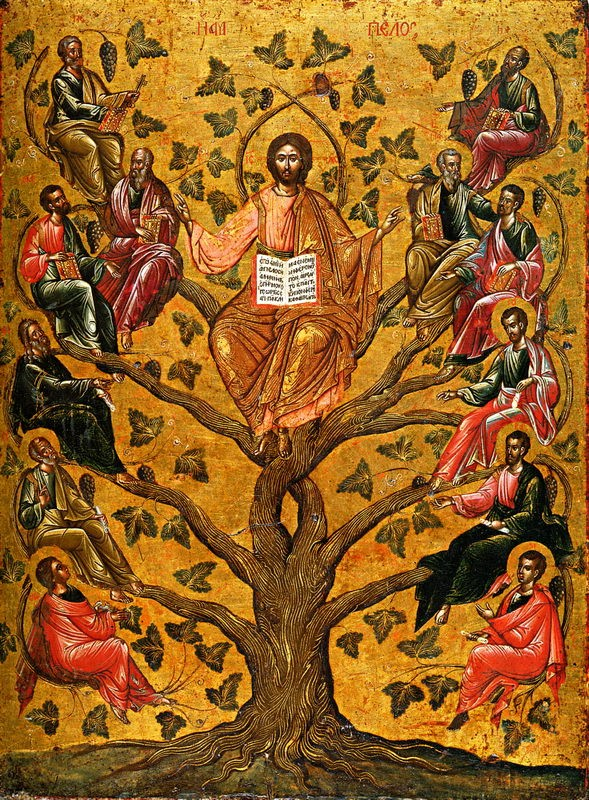

Juan 15 — La Traducción Mister

Casi todas las imágenes de este capítulo pintan una viña. Esta pinta la frase. El v. 5 dice yo soy la vid, vosotros los sarmientos, y aquí los sarmientos son personas, sentadas en los recodos de la madera, cada una con un libro. La palabra griega está escrita en rojo sobre el oro, arriba: ἡ ἄμπελος, la vid. El icono lleva escrito el sustantivo del que trata.
Cuente las figuras. Son doce. El capítulo en cuyo árbol están sentadas se dijo a once: Judas salió en 13:30, y la nota sobre «ya estáis limpios» depende justamente de su ausencia. Este tipo de icono no es una escena de aquella noche, sino una imagen del colegio apostólico, y por eso la cuenta es la tradicional y no la de los hombres que había en la sala. Conviene sostener las dos cosas a la vez: el icono acierta del todo con la metáfora y se equivoca discretamente con la escena.
⚠ Y fíjese en lo de abajo. La pintura occidental de este pasaje suele encuadrar en el fruto. El icono pinta la raíz: un tronco grueso, retorcido y sin gracia que sale de la tierra y ocupa el tercio inferior entero. Todo lo de arriba es oro. Es una lectura del v. 4 (el sarmiento no puede llevar fruto por sí mismo) puesta en la composición y no en un pie de foto.
.jpg){kind=link}
Notas del traductor
Cada nota explica la decisión de esta traducción y la compara con el estante en español: la Reina-Valera, la NVI y la TNM. Las citas de versiones con derechos reservados se limitan a frases cortas.
1–3 — ⚠ «La vid verdadera», y un juego de tres palabras que el castellano casi salva
«Verdadera» aquí no significa verídica. Alēthinos es la palabra de Juan para lo auténtico frente a la copia, y la usa nueve veces: la luz verdadera (1:9), los verdaderos adoradores (4:23), el verdadero pan del cielo (6:32) y aquí la vid verdadera. Israel es una vid en todos los profetas —Salmo 80, Isaías 5, Jeremías 2, Oseas 10— y en cada uno de esos pasajes la vid defrauda. El adjetivo hace ese trabajo: no la vid honesta sino la verdadera.
⚠ Y el que la trabaja es, en los otros Evangelios, el malo de la historia. El griego es geōrgos, el que labra la tierra. Sale diecinueve veces en el Nuevo Testamento, y en Mateo 21, Marcos 12 y Lucas 20 —la parábola de la viña— los geōrgoi son los labradores que apalean a los siervos y matan al hijo. Juan le da la misma palabra al Padre. RV y NVI ponen «labrador», que es exacto.
⚠ Ahora el juego de palabras, que es la razón de ser del v. 3. Tres palabras en dos versículos, y en griego son casi la misma: airei (quita), kathairei (limpia podando), katharoi (limpios). La segunda es la primera con un prefijo; la tercera es el adjetivo de la segunda.
⚠ Y aquí la RV conserva lo que el inglés pierde. RV pone «lo limpiará» en el v. 2 y «ya estáis limpios» en el v. 3: el vínculo se oye. NVI lo rompe, con «la poda» y luego «limpios», dos palabras sin relación. La King James inglesa lo rompe también. Aquí se sigue a la RV en esto, porque el v. 3 no es un cambio de tema: es el remate del v. 2 —y a vosotros ya os lo han hecho.
⚠ Y airō es de verdad ambiguo. Significa levantar y significa quitar. Hay quien sostiene que el viñador del siglo I levantaba del suelo los sarmientos caídos para que fructificaran, lo que convertiría el v. 2 en un rescate y no en una poda. Es un argumento real sobre una práctica real; pero once capítulos antes el verbo hace otra cosa: «el Cordero de Dios que quita el pecado del mundo» (1:29). Aquí se imprime «quita», con la otra lectura anotada.
El v. 3 responde a algo dicho dos capítulos antes. En el lavatorio de los pies: «vosotros estáis limpios, aunque no todos» (13:10-11), y Juan explica que se refería al que iba a entregarlo. Judas ya ha salido de la sala (13:30). «Ya estáis limpios» es lo que queda por decir cuando la excepción se ha marchado.
4–8 — «Permaneced en mí»: la palabra que el capítulo anterior estuvo plantando
Menō —permanecer— sale once veces en estos cinco versículos. Juan 14 lo usó tres veces y nunca como mandato: el Padre permaneciendo en el Hijo (14:10), el Espíritu junto a ellos (14:17), Jesús junto a ellos (14:25). Aquí se vuelve imperativo y ya no deja de serlo. Juan usa el verbo cuarenta veces, más que ningún otro libro.
El castellano tiene una ventaja aquí. «Permanecer» es una sola palabra corriente que sirve en los once casos, y RV la mantiene. El inglés tiene que elegir entre abide (que conserva el hilo pero ya casi nadie dice) y remain / stay / live in (que suenan naturales y cortan el hilo). Nosotros no tenemos ese problema.
⚠ Klēma, la palabra para el sarmiento, sale cuatro veces en el Nuevo Testamento y las cuatro son de este capítulo (vv. 2, 4, 5, 6). Es concretamente el vástago de la vid, no una rama cualquiera; la palabra general para rama es klados. RV pone «pámpano», que es igual de preciso; NVI pone «rama», que es la palabra general y pierde la precisión.
El v. 6 está en pasado en griego —fue echado fuera, se secó—, que no es una predicción sino la manera griega corriente de decir lo que siempre pasa. Todas las versiones lo pasan al presente, y en castellano hacen bien.
9–11 — El orden de la condicional, y un gozo que se llena
Léase el v. 10 en el orden en que lo pone el griego. Si guardáis mis mandamientos, permaneceréis en mi amor: primero guardar, después permanecer. El mismo orden estaba en 14:15. Es el contrario de como suele predicarse la frase, donde el amor va primero y la obediencia le sigue como prueba; aquí la obediencia es en qué consiste permanecer. Y la segunda mitad se lo aplica a él mismo, con la misma construcción.
«Para que vuestro gozo se llene del todo.» Plērōthē es un verbo de recipiente: lleno hasta el borde, no aumentado. RV pone «sea cumplido», que es correcto y pierde la imagen del vaso.
12–15 — ⚠ «Amor mayor», y un ascenso de esclavo a amigo
Meizona —mayor— por tercera vez en dos capítulos. El que cree hará obras mayores (14:12); el Padre es mayor que yo (14:28); nadie tiene amor mayor. Y viene una cuarta en el v. 20.
«Poner su vida» es una frase que este Evangelio ya usó, de una sola persona. Tithēmi tēn psychēn sale en 10:11, 10:15, 10:17 y 10:18, y las cuatro son el buen pastor poniendo la vida por las ovejas. Aquí el mismo modismo se le entrega a quien esté escuchando. El «amor mayor» del v. 13 es famoso como epitafio de soldados; en su propio párrafo es una descripción de lo que el que habla va a hacer esa misma noche.
⚠ «Ya no os llamo esclavos.» Doulos es esclavo, no criado: la palabra del trabajo poseído. RV y NVI ponen «siervos», igual que el inglés pone servants, y en las dos lenguas eso suaviza lo que la palabra dice. Aquí se pone esclavos, porque el contraste con amigos vive de esa dureza. La razón que se da es información: el esclavo no sabe lo que hace su señor, y a ellos se les ha contado todo. La amistad, en esta frase, se define por haber sido puesto al corriente.
Y luego la condición, que chirría y debe chirriar. V. 14: sois mis amigos si hacéis lo que os mando. Una amistad con una instrucción adjunta no es lo que el castellano moderno entiende por amistad, y el capítulo no lo resuelve: el v. 15 da acto seguido una razón que no tiene nada que ver con obedecer.
16–17 — «No me elegisteis vosotros», y los dos hilos empalmados
El orden de palabras es enfático y todas las versiones lo conservan. Ouch hymeis me exelexasthe: no vosotros a mí elegisteis. Los alumnos de un rabino elegían maestro; la frase está negando el arreglo normal.
«Os puse» es el mismo verbo que «poner la vida». Ethēka es el aoristo de tithēmi, el verbo del v. 13: poner, colocar, depositar. Pone su vida y los coloca a ellos donde han de estar, en dos frases y con un solo verbo.
⚠ Y aquí se encuentran las dos palabras del capítulo. Fruto que permanezca: karpos y menō en una sola expresión, los dos hilos del pasaje atados en tres palabras. Karpos ha salido ocho veces en este capítulo, tres de ellas sólo en el v. 2.
18–21 — «Si el mundo os odia», y un cambio de tiempo verbal fácil de perder
Fíjese en los dos tiempos del v. 18. El mundo os odia: presente. A mí me ha odiado: perfecto, una cosa terminada cuyo resultado sigue en pie. El odio dirigido a ellos es tiempo presente; el dirigido a él es ya un hecho consumado con consecuencias en marcha.
«El mundo amaría lo suyo.» El verbo aquí es phileō, el verbo de donde sale philos, amigo, cuatro versículos antes. El mundo se hace amigo de lo que le pertenece; él acaba de llamarlos amigos. La misma raíz, dos pertenencias distintas, en un mismo párrafo.
«No es el esclavo mayor que su señor» es meizōn otra vez, la cuarta en dos capítulos —y se está citando a sí mismo: lo dijo en el lavatorio de los pies (13:16), donde significaba que debían lavar pies. Aquí significa que deben esperar lo que le pasó a él.
22–25 — ⚠ «Me odiaron de balde» — y una palabra que sirvió para justificar mucho daño
Primero una rareza pequeña. Los vv. 22 y 24 leen eichosan, «no habrían tenido», con una terminación -osan que pertenece al griego hablado y no al literario. No aparece en ninguna otra parte del Nuevo Testamento: dos veces en este capítulo y nunca más.
⚠ «De balde» es la palabra que en todas partes significa «de regalo». Dōrean sale catorce veces en el Nuevo Testamento, y fuera de este versículo es casi siempre vocabulario de gracia: justificados gratuitamente por su gracia (Romanos 3:24), tome del agua de la vida gratuitamente (Apocalipsis 22:17), de gracia recibisteis, dad de gracia (Mateo 10:8). Aquí la misma palabra apunta al otro lado: odio sin nada detrás, regalado sin motivo. La cita es del Salmo 35:19 o del 69:4, donde el Antiguo Testamento griego usa exactamente esta palabra.
⚠ Y una expresión que hay que tratar con cuidado: «la ley de ellos». El que habla es judío, cita un salmo judío, se dirige a discípulos judíos y llama de ellos a la Escritura judía: la de los que se le oponen. Es un distanciamiento retórico dentro de una discusión entre judíos, no una afirmación sobre una religión vista desde fuera. Esa distinción se perdió durante casi toda la historia cristiana: el lenguaje de este capítulo sobre un «mundo» que odia y sobre «la ley de ellos» se leyó como permiso, y alimentó siglos de persecución para los que el texto, en sus propios términos, no da pie. La traducción se deja tal cual, porque suavizarla ocultaría lo que realmente estuvo disponible para el abuso. La nota está aquí en su lugar.
26–27 — ⚠ El versículo por el que se separaron la Iglesia de Oriente y la de Occidente
Este es el versículo del Filioque, y su griego no se discute. To pneuma tēs alētheias ho para tou patros ekporeuetai: el Espíritu de la verdad que sale del Padre. El Credo niceno tomó de aquí el participio de ese verbo. En el Occidente latino se añadió una palabra —qui ex Patre Filioque procedit, «que procede del Padre y del Hijo»— y esa añadidura fue una de las causas declaradas del cisma de 1054.
⚠ Lo que conviene notar es que las dos partes podían citar este versículo con honradez. La misma frase dice que yo os enviaré de parte del Padre y que sale del Padre. Un envío por el Hijo y una salida desde el Padre, en un solo renglón. El argumento oriental es que el versículo nombra sólo al Padre como origen y que la añadidura altera el credo; el occidental, que el envío por el Hijo también está ahí. El versículo no lo zanja, y esta página tampoco.
El verbo, en llano. Ekporeuomai no es un término técnico: es salir, venir fuera. Juan lo usa una vez más, en 5:29, de los muertos que salen de los sepulcros. RV y NVI ponen «procede», que es la palabra del credo. Aquí se pone «sale», el verbo corriente, para que se vea cuánto peso se puso sobre qué poco.
⚠ Y el pronombre lo vuelve a hacer. Ekeinos —masculino— con pneuma, sustantivo neutro, por antecedente. Igual que en 14:26, y otra vez en 16:13. Tres veces en tres capítulos: eso ya es costumbre y no descuido.
Patrones que conviene retener.
La deuda del capítulo anterior se paga aquí. Menō quedó plantado tres veces en Juan 14 y nunca como mandato. Aquí sale once veces en cinco versículos, y todas son un imperativo o la condición de uno.
⚠ Dos palabras son prácticamente exclusivas de este capítulo. Klēma, el sarmiento, sale cuatro veces en el Nuevo Testamento y las cuatro son de aquí. Eichosan, la forma vulgar de los vv. 22 y 24, no sale en ninguna otra parte.
⚠ El juego de palabras de los vv. 2-3 es el argumento —airei / kathairei / katharoi— y aquí el castellano gana: la RV conserva «limpiará» y «limpios», mientras que la NVI lo rompe con «poda», y el inglés lo pierde entero. El v. 3 no cambia de tema: remata el v. 2, y además responde a «estáis limpios, aunque no todos» de 13:10, ahora que Judas ha salido de la sala.
Palabras que llegan cargadas de otras partes de este Evangelio. Geōrgos, el que trabaja la vid, es la palabra que la parábola sinóptica da a los labradores que matan al hijo: Juan se la da al Padre. Poner la vida es la frase del buen pastor desde el capítulo 10, y aquí se entrega. Y dōrean, «de balde» en el v. 25, es la palabra corriente del Nuevo Testamento para un regalo gratuito, usada una vez en dirección contraria.
Decisiones. Permanecer para menō siempre, como en el capítulo 14. Limpia en el v. 2 y limpios en el v. 3, siguiendo a la RV para salvar el juego. Esclavos en el v. 15, no «siervos», porque el contraste con amigos vive de esa dureza. Y sale en el v. 26 en vez del «procede» del credo, para que se vea el verbo llano sobre el que se construyó todo.
Lo que no conviene saltarse. A un esclavo se lo asciende a amigo por haberle contado cosas. El «amor mayor» es una descripción de lo que el que habla va a hacer esa noche, no una máxima. El mundo se hace amigo de lo suyo con el verbo de donde sale «amigo». Y el v. 26 es una sola frase con dos mitades que mil años de discusión no lograron poner de acuerdo.
⚠ Nota sobre el orden: Juan está en estas páginas con los capítulos 1–4 y ahora 14–15, así que quedan dos hilos abiertos y la flecha de arriba sigue el más cercano. El discurso continúa en Juan 16, donde el Abogado vuelve por última vez. El hueco anterior sigue abierto también: Juan 5–13 aún no están en estas páginas, y ahí es donde se reanuda la secuencia del libro.